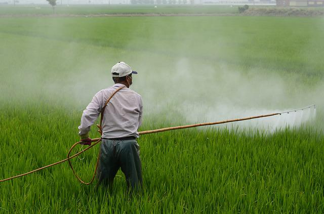
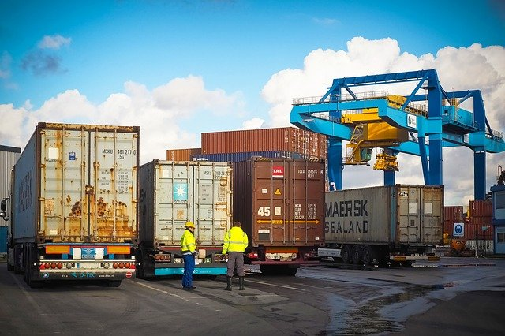
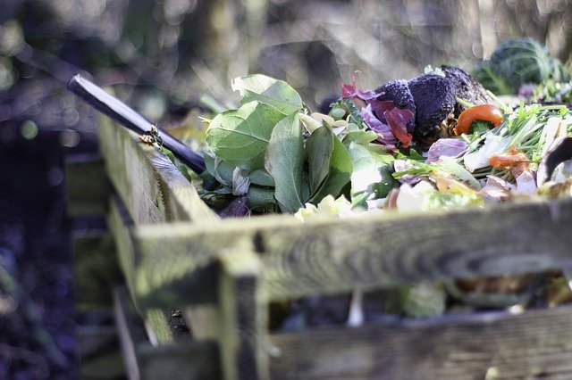

온실가스 31%가 먹거리에서 발생
FAO에 따르면 전세계 온실가스의 31%가 먹거리에서 발생한다고 합니다. 그 중 생산부문이 42%를, 가공, 유통, 소비 등이 35%를, 토지이용이 23%를 차지한다고 합니다.더 알아보기

흙의 기능을 강조한 '흙의 날' 제정
김춘진 aT사장이 국회의원 시절이던 2013년, 흙의 가치와 보전의 중요성을 강조하기 위해 '흙의 날 제정에 관한 법률'을 대표 발의했고, 2015년 흙의 날이 법정기념일이 되었습니다.더 알아보기
코리아 그린푸드데이 추진
먹거리 분야의 생산-유통-소비 전 단계에서 탄소배출을 감축하자는 캠페인을 추진하게 되었습니다. 매월 하루, 지역에서 생산한 친환경 농산물로 만든 음식을 남기지 않고 먹는 캠페인입니다.더 알아보기
한국농수산식품유통공사 / follow us Kakaotalk facebook instagram